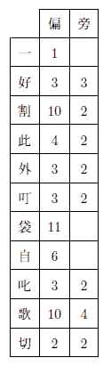

またしても明智小五郎の手柄話です。
それは、私が明智と知合になってから一年程たった時分の出来事なのですが、事件に一種劇的な色彩があって中々面白かったばかりでなく、それが私の身内のものの家庭を中心にして行われたという点で、私には一層忘れ
この事件で、私は、明智に暗号解読のすばらしい才能のあることを発見しました。読者諸君の興味の為に、彼の解いた暗号文というのを先ず冒頭に掲げて置きましょうか。
一度お伺いしたい／＼と存じながらつい
好い折がなく失礼ばかり致して居ります
割合にお暖かな日がつゞきますのね是非
此頃にお邪魔させていただきますわ扨 日
外 は［＃「は」は「×」付き］つまらぬ品物をお贈りしました処 御
叮嚀なお礼を頂き痛み入りますあの手提
袋は実はわたくしがつれ／″＼のすさびに
自 か［＃「か」は「×」付き］ら拙 い刺繍 をしました物で却ってお
叱りを受けるかと心配したほどですのよ
歌の方は近頃はいかが？時節柄御身お大
切に遊ばして下さいまし
これはある葉書の文面です。忠実に原文通り記して置きました。文字を抹消したところから各行の字詰に至るまで凡て原文のままです。好い折がなく失礼ばかり致して居ります
割合にお暖かな日がつゞきますのね是非
此頃にお邪魔させていただきますわ
叮嚀なお礼を頂き痛み入りますあの
袋は実はわたくしがつれ／″＼のすさびに
叱りを受けるかと心配したほどですのよ
歌の方は近頃はいかが？時節柄御身お大
切に遊ばして下さいまし
さよなら
さてお話ですが、当時私は避寒
当時都には「黒手組」と自称する
私の実家は極く貧乏で、私自身もこうして温泉場に来てまで筆稼ぎをしなければならぬ程ですが、伯父はどうして中々金持なのです。二三の相当な会社の重役なども勤めていますし、十分「黒手組」の目標になる資格はありました。日頃なにかと世話になっている伯父のことですから、私は何を
そこで、私は早速
ここで一寸当時の「黒手組」の
さてこの兇賊の御見舞を受けた伯父の一家では、今も
伯父には富美子の外に一人の息子がありましたが、まだ中学へ入った
そこで、当然私は友達の明智小五郎のことを想出しました。彼なればこの事件にも何とか眼鼻をつけて呉れるかも知れません。そう考えますと、私は早速それを伯父に相談して見ました。伯父は一人でも余計に相談相手の欲しい際ではあり、それに私が日頃明智の探偵的手腕についてよく話をしていたものですから、尤も伯父としては大して彼の才能を信用してはいなかった様ですけれど、
私は御承知の煙草屋へ車を飛ばせました。そして、色々の書物を山と積上げた例の二階の四畳半で明智に逢いました。都合のよかったことには、彼は数日来「黒手組」についてあらゆる材料を蒐集し、丁度得意の推理を組立てつつある所でした。而も彼の口ぶりではどうやら何か端緒を
間もなく、明智と私とは伯父の邸の
取込みの中で紅茶だ菓子だと色々のものが運ばれました。明智は舶来の接待煙草を一本つまんで、つつましやかに煙を吐いていましたっけ。伯父は如何にも実業界の古狸といった形で、生来大男の
「事の起りは、左様、今日から六日前、つまり十三日でした。その日の丁度昼頃、娘の富美が一寸友達の所までといって、着換えをして家を出たまま晩になっても帰らない。我々始め『黒手組』の噂に脅されている際でしたから、先ずこの家内が心配を始めましてね、その友達の家へ電話で問合せた処が、娘は今日は一度も行っていないという返事です。さあ驚いてね。判っている丈の友達の所へはすっかり電話をかけさせて見たが、どこへも寄っていない。それから、書生や出入りの車夫などを狩集めて八方捜索に尽しました。その晩はとうとう我々始め一睡もせずでしたよ」
「一寸御話中ですが、その時、お嬢さんがお出ましになる所を実際に見られた方がありましたでしょうか」
明智が尋ねますと、伯母が代って答えました。
「はあ、それはもう女共や書生などが確かに見たのだそうで御座います。
「それから後は一切不明なのですね。御近所の人とか通行人などで、お嬢さんのお姿を見かけたものもないのですね」
「そうです」と伯父が答えます。「娘は車にも乗らないで行ったのだから、若し知った人に
Ｔ原というのは、あの都の近郊にある練兵場のＴ原のことですが、原の東の隅っこの所に一寸した灌木林があって、一本松はその真中に立っているのです。練兵場とはいい
「その脅迫状を警察で検べた結果、何か手懸りでも見つかりませんでしたか」とこれは明智です。
「それがね、まるで手懸りがないというのです。紙はありふれた半紙だし、封筒も茶色の一重の安物で、目印もなにもない。刑事は、
「警視庁にはそういう事を検べる設備はよく整っていますから、先ず間違いはありますまい。で、消印はどこの局になっていましたでしょう」
「いや、消印はありません。というのは、郵便で送ったのではなく、誰かが表の郵便受
「それを函から御出しになったのはどなたでしょう」
「私です」書生の牧田が
「何者がそれを投込んだかという点も」伯父がつけ加えました。「附近の交番の巡査などにも尋ねて見たり、色々取調べたがさっぱり判らないのです」
明智はここで暫く考え込みました。彼はこれらの意味のない問答の中から、何物かを発見しようとして苦しんでいる様子でした。
「で、それからどうなさいました」やがて顔を上げた明智が話の先を促しました。
「わしは余程警察沙汰にしてやろうかと思いましたが、仮令一片のおどし文句にもせよ、娘の生命をとると云われては、そうもなり兼ねる。そこへ、家内もたって止めるものですから、可愛い娘には替えられぬと観念して、残念だが一万円出すことにしました。
脅迫状の指定は今も云う通り、十五日の午後十一時、Ｔ原の一本松までということで、わしは少し早目に用意をして、百円札で一万円白紙に包んだのを懐中し、脅迫状には必ず一人で来る様にとありましたが、家内が馬鹿に心配して勧めますし、それに書生の一人位連れて行ったって、まさか賊の邪魔にもなるまいと思ったので、
伯父はそういって苦笑いをしました。私は当夜の物々しい
「あのＴ原の四五町手前で自動車を降りると、わしは懐中電燈で道を照しながらやっと一本松の下までたどりつきました。牧田は、闇のことで見つかる心配はなかったけれど、なるべく
「はあ、御主人の所から十間位もありましたかと思いますが、繁みの中に腹這いになって、ピストルの引金に指をかけて、じっと御主人の懐中電燈の光を見詰めて居りました。随分長うございました。私は二三時間も待った様な気がいたします」
「で、賊はどの方角から参りました」
明智が熱心に訊ねました。彼は少からず興奮している様子です。といいますのは、ソラ、例の頭の毛をモジャモジャと指でかき廻す癖が始ったので解ります。
「賊は原っぱの方から来た様です。つまり我々が通って行った路とは反対の側から現れたのです」
「どんな風をしていました」
「よくは判らなかったが、何でも真黒な着物を着ていた様です。頭から足の先まで真黒で、ただ顔の一部分丈が、闇の中にほの白く見えていました。それというのが、わしはその時賊に遠慮して懐中電燈を消して了ったのでね。だが、非常に背の高い男だったこと丈けは間違いない。わしはこれで五尺五寸あるのですが、その男はわしよりも二三寸も高かった様です」
「何か云いましたか」
「だんまりですよ。わしの前まで来ると、一方の手にピストルをさしむけながら、もう一方の手をぐっと突出したもんです。で、わしも無言で金の包みを手渡ししました。そして、娘の事を云おうとして、口をききかけると、賊の奴矢庭に人差指を口の前に立てて、底力の籠った声でシッと云うのです。わしは黙ってろという合図だと思って何も云いませんでした」
「それからどうしました」
「それっ
「牧田さんの隠れていた所からも賊の姿は見えましたか」
「はあ、暗いのと樹が茂っていた為に、姿は見えませんでしたが、何かこう賊の
「それからどうしました」
「で、わしはもう帰ろうというと、牧田が賊の足跡を検べて見ようというのです。つまりあとになって警察に教えてやれば非常な手懸りになるだろうという意見でね。そうだったね牧田」
「はあ」
「足跡が見つかりましたか」
「それがね」伯父は変な顔付をして云うのです。「わしはどうも不思議で仕様がないのですて。賊の足跡というものがないのです。これは決してわし達の見誤りではないので、昨日も刑事が
「ほう、それは非常に面白いですね。もう少し詳しく御話願えませんでしょうか」
「地面の現れているのは、あの一本松の真下の所丈けで、そのまわりには落葉が溜っていたり、草が生えていたりして、足跡はつかない訳ですが、その地面の現れている部分には、わしの下駄と牧田の靴の跡しか残っていないのです。ところが、わしの立っていた所へ来て金包を受取る為には、どうしたって賊はその足跡の残る様な部分へ立入っていなければならないのに、それがない。わしの立っていた地面から草の生えている所までは、一番短いので二間は十分あったのですからね」
「そこには何か動物の足跡の様なものはありませんでしたか」
明智が意味あり気に訊ねました。伯父はけげんな顔をして、
「え、動物ですって」
と聞返します。
「例えば、馬の足跡とか犬の足跡とかいう様なものです」
私はこの問答を聞いて、ずっと以前にストランド・マガジンか何かで読んだ一つの犯罪物語を
「さあ、そこまではわしも気がつかなかったが、牧田お前覚えていないかね」
「はあ、どうもよく覚えませんですが、多分そんなものはなかった様でございます」
明智はここで又黙想を始めました。
私は最初伯父から話を聞いた時にも思ったことですが、今度の事件の中心は、この賊の足跡のないという点にあるのです。それは実に一種不気味な事実でした。
長い間沈黙が続きました。
「併し何は
これで伯父の話は終りました。明智は更に色々細い点について巧みな質問を発し、一つ一つ事実を確めて行きました。が、それらには別に御話する程の事柄もありません。
「ところで」明智は最後に訊ねました。「近頃お嬢さんの所へ、何か疑わしい手紙の様なものでも参っていないでしょうか」
これには伯母が答えました。
「私共では娘の所へ参りました手紙類は必ず一応私が目を通すことにして居りますので、怪しいものがあればじきに解る筈でございますが、左様でございますね、近頃別段これといって……」
「いや、極くつまらない様な事でも結構です。どうか御気附きの点を御遠慮なく御話し願い度いのですが」
明智は伯母の口調から何か感じたのでしょう、畳みかける様に訊ねました。
「でも、今度の事件には多分関係のないことでしょうと存じますが――」
「兎も角御話なすって見て下さい。そういう所に往々思わぬ手懸りがあるものです。どうか」
「では申上げますが、一月ばかり前から娘の所へ、私共の一向聞覚えのないお名前の方からちょくちょく葉書が参るのでございますよ。いつでしたか、一度私は娘に、これは学校時代の御友達ですかって聞いて見たことがございましたが、娘はええと答えはいたしましたものの、どうやら何か隠している様子なのでございます。私も妙に存じまして、一度よく
「では、それを一度拝見願えませんでしょうか」
「よろしゅうございます。多分娘の手文庫の中にございましょうから」
そうして伯母は問題の葉書というのを探し出して来ました。見ると日附は伯母の云った通り十二日で、差出人は匿名なのでしょう、ただ「やよい」となっています。そして、市内の某局の消印が捺されていました。文面はこの話の冒頭に掲げて置きました「一度お伺い
私もその葉書を手に取って十分吟味して見ましたが、何の変てつもない、如何にも少女らしい要でもない文句を並べたものに過ぎません。ところが、明智は何を思ったのか、さも一大事と言う調子で、その葉書を暫く拝借して行き
こうして明智の質問は
「いや、お話を伺った丈けでは別段これという意見も立ち兼ねますが、……兎も角やって見ましょう。ひょっとしたら、二三日の中にお嬢さんをお連れすることが出来るかも知れません」
さて、伯父の邸を辞した私達は、肩を並べて帰途についたことですが、その折、私が色々言葉を構えて明智の考えを聞き出そうと試みたのに対して、彼は唯、捜査方針の一端を握ったに過ぎないと答え、その所謂捜査方針については、一言も打開けませんでした。
その翌日、私は朝食をすませますと、直ぐに明智の宿を訪れました。彼がどんな風にこの事件を解決して行くか、その径路が知り度くてたまらなかったからです。
私は例の書物の山の中に埋没して得意の瞑想に
「あら、今日はいらっしゃいませんよ。珍しく朝早くからどっかへ御出かけになりましたの」
といって呼止められました。驚いて行先を訊しますと、別に云い残してないということです。
さてはもう活動を始めたのかしら、それにしても朝寝坊の彼がこんな早くから外出するというのは余り例のないことだと思いながら、私は一先ず下宿へ帰りましたが、どうも気になるものですから、少し間を置いて二度も三度も明智を訪問したことです。ところが、何度行って見ても彼は帰っていないのです。そして、とうとう翌日の昼頃まで待ちましたが、彼はまだ姿を見せないではありませんか。私は少々心配になって来ました。宿のお内儀さんも非常に心配して明智の部屋に何か書残してないか検べて見たりしましたが、そういうものもありません。
私は一応伯父の耳に入れて置く方がいいと思いましたので、早速彼の邸を訪ねました。伯父夫妻は相変らずお題目を唱えて御祖師様を念じていましたが、事情を話しますと、それは大変だ。明智までも賊の虜になって了ったのではあるまいか。探偵を依頼したのだから、こちらにも十分責任がある。若しやそんなことがあったら明智の親許に対しても何とも申訳がないとあって、伯父を始め騒ぎ出すという始末です。私は明智に限って万々へまな真似はしまいと信じていましたが、こう周囲で騒がれては、心配しない訳には行きません。どうしようどうしようという内に時間がたつばかりです。
ところが、その日の午後になって、私達が伯父の家の茶の間へ集って
フミコサンドウコウイマタツ
それは意外にも明智が
そうして、待兼ねた私達の前に、明智のニコニコ顔が現れたのは、もう日暮れ時分でした。見ると幾分
 待
待「非常に残念ですが、何も御話出来ないのです」明智が少し困った様な顔をして云いました。
「いくら私が無謀でも、単身であの兇賊を逮捕する訳には行きません。私は色々考えた結果、極くおだやかにお嬢さんを取戻す
そう云って彼は白紙に包んだものを伯父に手渡しました。
伯父夫妻としては、自分の一家さえ安全なら、賊が逮捕されようとされまいと、そんなことは問題ではないのですから、ただもう明智への礼心で、賑かな
「いやもう、あんたは全く娘の生命の親です。わしはここで誓っときます。将来ともあんたのお頼みならどんな無理なことでもきっと承知するということをね。どうです。さし当り何か御望み下さることでもありませんかな」
伯父は明智に杯をさしながら、
「それは有難いですね」
明智が答えます。
「例えばどうでしょう。私の友人のある男が、お嬢さんに大変こがれているのですが、その男にお嬢さんを頂戴するという様な望みでも構いませんでしょうか」
「ハハ……、あんたも
伯父はまんざら常談でもない様子で云いました。
「その友人はクリスチャンなんですが、この点はどうでしょう」
明智の言葉は座興にしては少し真剣すぎる様に思われます。日蓮宗に凝り固まっている伯父は一寸いやな顔をしましたが、
「よろしい。わしは一体
「いや有難う。きっといつかお願いに上りますよ。どうか今のお言葉をお忘れない様に願います」
この一くさりの会話は、一寸妙な感じのものでした。座興と見ればそうとも考えられますが、真剣な話と思えば、又そうらしくもあるのです。ふと私は、バリモアの芝居では、あのシャーロック・ホームズが、事件で知合いになった娘と恋に陥り、遂に結婚する筋になっているのを思い出して、密かにほほ笑みました。
伯父はいつまでも引止めようとしましたが、余り長くなりますので、やがて私達は
「君、いくら『黒手組』との約束だって、僕に丈けは様子を話して呉れたっていいだろう」
私は伯父の家の門を出るのを待ち兼ねて、こう明智に問いかけたものです。
「ああ、いいとも」彼は案外た易く承知しました。「じゃ、コーヒでも飲みながら、ゆっくり話そうじゃないか」
そこで、私達は一軒のカフェーへ入り、奥まったテーブルを選んで席につきました。
「今度の事件の出発点はね。あの足跡のなかったという事実だよ」明智はコーヒを命じて置いて探偵談の口を切りました。
「あれには少くとも六つの可能な場合がある。第一は伯父さんや刑事が賊の足跡を見落したという解釈、賊は例えば獣類とか鳥類とかの足跡をつけて我々の目を
僕は兎も角現場を検べて見る必要を感じたので、あの翌朝早速Ｔ原へ行って見た。若しそこで第一から第四までの痕跡を発見することが出来なかったら、さしずめ第五と第六の場合が残るばかりだから、非常に捜査範囲を狭めることが出来る訳だ。ところがね、僕は現場で一つの発見をしたんだ。警察の連中は大変な見落しをやっていたのだよ。というのは、地面に沢山、何だかこう尖ったもので突いた様な跡があるんだ。尤もそれは皆伯父さん達の足跡（といっても大部分は牧田の下駄の跡）の下にかくれていて、一寸見たんでは判らないのだがね。僕はそれを見て種々想像を
明智はこう云ってコーヒを一口舐めました。そして、何だかじらす様な目附をして私を眺めるのです。併し、私には残念ながらまだ彼の推理の跡を
「で、結局どうなんだい」
私は口惜しまぎれに怒鳴りました。
「つまりね。
「牧田だって」私は思わず叫びました。「それは不合理だよ。あんな愚な、それに正直者で通って居る男が……」
「それじゃね」明智は落着いて云うのです。「君が不合理だと思う点を一つ一つ云って見給え。答えるから」
「数え切れぬ程あるよ」私は
「第一伯父は賊が大男の彼よりも二三寸も背が高かったと云っている。そうすると五尺七八寸はあった筈だ。ところが牧田は反対にあんな小っぽけな男じゃないか」
「反対もこう極端になると一寸疑って見る必要があるよ。一方は日本人としては珍しい大男で、一方は畸形に近い小男だね。これは、如何にもあざやかな対照だ。惜しいことに少しあざやか過ぎたよ。若し牧田がもう少し短い竹馬を使ったら、却って僕は迷わされたかも知れない。ハハハハハハ分るだろう。彼はね。竹馬を短くした様なものを予め現場に隠して置いてそれを手で持つ代りに両足に縛りつけて用を弁じたんだよ。闇夜で
「そんな子供
「それが例のメリンスの兵児帯なんだ。実にうまい考えだろう。あの大幅の黒いメリンスをグルグルと頭から足の先まで捲きつけりゃ、牧田の小さな身体位訳なく隠れて了うからね」
あんまり簡単な事実なので、私はすっかり馬鹿にされた様な気がしました。
「それじゃ、あの牧田が『黒手組』の手先を勤めていたとでも云うのかい。どうもおかしいね。黒手……」
「おや、まだそんな事を考えているのか、君にも似合わない、ちと今日は頭が鈍っている様だね。伯父さんにしろ、警察にしろ果ては君までも、すっかり、『黒手組』恐怖症にとッつかれているんだからね。まあ、それも時節柄無理もない話だけれど、若し君がいつもの様に冷静でいたら、何も僕を待つまでもなく、君の手で十分今度の事件は解決出来ただろうよ。これには『黒手組』なんてまるで関係ないんだ」
成程、私は頭がどうかしていたのかも知れません。こうして明智の説明を聞けば聞く程、却って真相が分らなくなって来るのです。無数の疑問が、頭の中でゴッチャになって、こんぐらがって、何から訊ねていいのか訳が分らない位です。
「じゃ、
「疑問百出の
明智はこう云って、いつかの日伯父の所から借りて来た例の「やよい」という署名の葉書を取出しました。（読者諸君、
「若しもこの暗号文がなかったら、僕はとても牧田を疑う気になれなかったに相違ない。だから、今度の発見の出発点はこの葉書だったと云ってもいい訳だ。併しこれが暗号文だと最初からハッキリ解っていたのではない。ただ疑って見たんだ。疑った訳はね、この葉書が富美子さんのいなくなる丁度前日に来ていたこと、手跡がうまく真似てはあるがどうやら男らしいこと、富美子さんがこれについて聞かれた時妙なそぶりを示したことなどもあったが、それよりもね、これを見給え、まるで原稿用紙へでも書いた様に各行十八字詰めに実に綺麗に書いてある。が、ここへ横にずっと線を引いて見るんだ」
彼はそう云いながら、鉛筆を取出して、丁度原稿用紙の横線の様なものを引きました。
「こうするとよく分る。この線に沿ってずっと横に目を通して見給え、どの列も半分位仮名が混っているだろう。ところがたった一つ例外がある。それは、この一番始めの線に沿った各行の第一字目だ、漢字ばかりじゃないか。
一好割此外叮袋自叱歌切
「ね、そうだろう」彼は鉛筆でそれを横に辿りながら説明するのです。「これはどうも偶然にしては変だ。男の文章なら兎も角、全体として仮名の方がずっと多い女の文章に、一列だけ、こんなにうまく漢字の揃う筈がないからね。兎に角僕は研究して見る価値があると思ったのだ。あの晩帰ってから一生懸命考えた。幸、以前暗号については一寸研究したことがあるので、割合楽に解けたことは、解けたがね。一つやって見ようか。先ずこの漢字の一列を拾出して考えるんだ。併しこの儘ではチーハーの文句見たいで、一向意味がない。何か漢詩か彼は手帳を出して左の様なものを書きました。

「この数字を見ると、偏の方は十一まで、旁の方は四までしかない。これが何かの数に符合しやしないか。例えばアイウエオ五十音をどうかいう風に配列した場合の順序を示すものであるまいか。ところが、アカサタナハマヤラワンと並べて見ると、その数は
アスヰチジシンバシヱキ
となる。『ヰ』と『ヱ』は当て字だろう。一劃の偏なんてないからア行では差支えるのでワ行を使ったのだ。果して暗号だった。ね、『明日一時新橋駅』この男却々暗号にかけては明智はここで一寸言葉を切った。
「驚いた。だが……」
私が尚おも様々の疑点について
「まあ待ち給え」彼はそれを押えつけて置いて続けました。「僕は現場を検べると、その足で伯父さんの邸の門前へ行って牧田の出て来るのを待伏せしていた。そして、彼が使にでも行くらしい風で出て来たのを、うまくごまかしてこのカフェーへ連れ込んだ。丁度今僕等が坐っているこのテーブルだったよ。僕は彼が正直者だことは、始めから君と同様に認めていたので、今度の事件の裏には何か深い事情が潜んでいるに相違ないと睨んでいた。でね、絶対に他言しないし、
君は多分
ところで、今度は牧田の方の問題だが、これもやっぱり女出入りなのだ。可哀そうに先生涙をぽろぽろ
私は聞き終って、ほっと溜息を
「すっかりコーヒが冷えて了った。じゃ、もう帰ろうか」
やがて明智は立上りました。そして、私達は各々の帰途についたのですが、分れる前に明智は何か想出した風で、先刻伯父から貰った二千円の金包を私の方へ差出しながら云うのです。
「これをね、序の時に牧田君にやって呉れ給え。婚資にと云ってね。君、あれは可哀そうな男だよ」
私は快く承諾しました。
「人生は面白いね。この俺が今日は二組の恋人の
明智はそういって、心から愉快そうに笑うのでした。